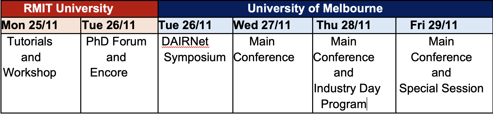

Program overview

Detailed program
The following program is for the main conference. For the Industry program, please see here.| Time | AJCAI Tutorial & Workshop Day (Nov 28th) |
|||
| 8:30 - 9:00 | Morning Tea (Sir Liew Edwards Building (14) - 132) | |||
| 9:00 - 10: 00 | Workshop 1: Foundations for Robust AI: Self-Supervised Learning (Room: Sir Llew Edwards Building (14)-116) | Workshop 2: Federated Learning in Australasia: when FL meets Foundation Models (Room: Sir Llew Edwards Building (14)-132) | Workshop 3: Artificial Intelligence Enabled Trustworthy Recommendations (Room: Sir Llew Edwards Building (14)-216) | Workshop 4: Machine learning for data-driven optimization (Room: Sir Llew Edwards Building (14)-115) |
| 10:00 - 10:15 | Break | |||
| 10:15 - 11:15 | Workshop 1 continues | Workshop 2 continues | Workshop 3 continues | Workshop 4 continues |
| 11:15 - 11:30 | Break | |||
| 11:30 - 12:30 | Workshop 1 continues | Workshop 2 continues | Workshop 3 continues | Workshop 4 continues |
| 12:30 - 14:00 | Lunch | |||
| 14:00 - 15:00 | Tutorial 1: Towards Communication-Efficient and Heterogeneity-Robust Federated Learning
(Room: Sir Llew Edwards Building (14)-132) |
Tutorial 2: Reinforcement Learning for Automated Negotiation
Supply Chain Management League as an Example (Room: Sir Llew Edwards Building (14)-116) |
Tutorial 3: Decoding the grammar of DNA using Natural Language Processing (Room: Sir Llew Edwards Building (14)-115) |
PhD Forum poster (Room: Sir Llew Edwards Building (14)-216) |
| 15:00 - 15:10 | Break | |||
| 15:10 - 16:00 | Tutorial 1: continues | Tutorial 2: continues | Tutorial 3: continues | PhD Forum poster continues |
| 16:00 - 16:10 | Break | |||
| 16:10 - 17:00 | PhD Forum panel (Room: Sir Llew Edwards Building (14)-216) Panelists: Prof Hanna Suominen, Prof Richi Nayak, Prof Liming Zhu, A/Prof Carlos Soares (Moderators: A/Prof Irena Koprinska and Dr Ruihong Qiu) |
|||
| 17:00 - 21:00 | Reception@PATINA AT ALUMNI COURT (Alumni Court, St Lucia QLD 4067) | |||
| Time | AJCAI Main Conference Day 1 (Nov 29th) |
|||
| 8:30 - 9:00 | Morning Tea & Opening (Room: Forgan Smith Building (01)-E215) | |||
| 9:00 - 10: 00 | Keynote 1 Speaker: Prof Ling Chen Title: How Do Large Language Models Capture the Ever-changing World Knowledge? A Review of Recent Advances (Chair: Prof Janet Wiles; Room: Forgan Smith Building (01)-E215) |
|||
| 10: 00 - 10:15 | Break | |||
| 10:15 - 11:15 | Keynote 2 Speaker: Prof Manik Varma Title: On Extreme Classification & Large Language Models for Search & Recommendation (Chair: Prof Geoff Webb; Room: Forgan Smith Building (01)-E215) |
|||
| 11:15 - 11:30 | Break | |||
| 11:30 - 12:30 | Long Oral Session 1: Machine Learning: Contrastive Learning, NAS, and Federated Learning (Chair: Dr Tongliang Liu; Room: Forgan Smith Building (01)-E215) 63 A Sampling Method for Performance Predictor Based on Contrastive Learning 74 XC-NAS: A New Cellular Encoding Approach for Neural Architecture Search of Multi-Path Convolutional Neural Networks 96 Concept-guided Interpretable Federated Learning 141 Aging Contrast: A Contrastive Learning Framework for Fish Re-identification Across Seasons and Years |
|||
| 12:30 - 14:00 | Lunch | |||
| 14:00 - 15:00 | Keynote 3 Speaker: Prof Peter Soyer Title: The Dermatology Domain (Chair: Prof Shazia Sadiq; Room: Forgan Smith Building (01)-E215) |
|||
| 15:00 - 15:10 | Break | |||
| 15:10 - 16:00 | Oral Session 1A: AI Ethics and AI for Social Good (Chair: Dr Jinfeng Zhang; Room: Forgan Smith Building (01)-E215) 95 Epistemic Reasoning in Computational Machine Ethics 61 Lateral AI: Simulating Diversity in Virtual Communities 86 Reports, Observations, and Belief Change 139 Systematic analysis of the impact of label noise correction on ML Fairness 114 Limiting Inequalities in Repeated House and Task Allocation Problems |
Oral Session 1B: Optimization and Data Analysis 1 (Chair: Dr Maoying Qiao; Room: Sir Llew Edwards Building (14)-116) 7 Minimum message length inference of the Weibull distribution with complete and censored data 12 Dynamic Landscape Analysis for Constrained Multiobjective Optimization Problems 69 Interpretable Drawing Psychoanalysis via House-Tree-Person Test 145 Bloating Reduction in Symbolic Regression through Function Frequency-based Tree Substitution in Genetic Programming 159 A Novel Group Genetic Algorithm for Resource Allocation in Container-Based Clouds |
||
| 16:00 - 16:10 | Break | |||
| 16:10 - 17:00 | Oral Session 2A: Text Analysis and Natural Language Processing (Chair: Dr Yadan Luo; Room: Forgan Smith Building (01)-E215) 76 Story Sifting Using Object Detection Techniques 167 Cy-Spider: Semantic Parsing Corpus and Baseline Models for a Property Graph 43 Towards Learning Action Models From Narrative Text Through Extraction and Ordering of Structured Events 89 Prompting Framework to Enhance Language Model Output 38 Generalized Bargaining Protocols: Mechanism Design for Automated Negotiations |
Oral Session 2B: Optimization and Data Analysis 2 (Chair: Dr Shoujin Wang; Room: Sir Llew Edwards Building (14)-116) 168 Genetic Programming with Adaptive Reference Points for Pareto Local Search in Many-Objective Job Shop Scheduling 143 Symbolic Data Analysis to Improve Completeness of Model Combination Methods 186 Approximating Solutions to the Knapsack Problem using the Lagrangian Dual Framework 71 A Semantic Genetic Programming Approach to Evolving Heuristics for Multi-objective Dynamic Scheduling 32 Auction-Based Allocation of Location-Specific Tasks |
||
| Time | AJCAI Main Conference Day 2 (Nov 30th) |
|||
| 8:30 - 9:00 | Morning Tea | |||
| 9:00 - 10: 00 | Keynote 4 Speaker: Prof Maria Garcia De La Banda Title: Beyond optimal solutions for real-world decision-support problems (Chair: A/Prof Andy Song; Room: Forgan Smith Building (01)-E109) |
|||
| 10: 00 - 10:15 | Break | |||
| 10:15 - 11:15 | Long Oral Session 2: Spatial and Sequential Data Processing (Chair: Dr Mingming Gong; Room: Forgan Smith Building (01)-E109) 154 Spatial Bottleneck Transformer for Cellular Traffic Prediction in the Urban City 182 Sequence Unlearning for Sequential Recommendation Systems 126 An Augmented Learning Approach for Multiple Data Streams Under Concept Drift 175 S5TR: Simple Single Stage Sequencer for Scene Text Recognition |
|||
| 11:15 - 11:30 | Break | |||
| 11:30 - 12:30 | Long Oral Session 3: Image and Video Processing (Chair: Dr Miaomiao Liu; Room: Forgan Smith Building (01)-E109) 162 Context-Based Masking for Spontaneous Venous Pulsations Detection in Retinal Videos 26 3RE-Net: Joint Loss-REcovery and Super-REsolution Neural Network for REal-time Video 29 Large-kernel Attention Network with Distance Regression and Topological Self-correction for Airway Segmentation 46 Short-term Solar Irradiance Forecasting from Future Sky Images Generation |
|||
| 12:30 - 14:00 | Lunch | |||
| 14:00 - 15:00 | Keynote 5 Speaker: Prof Mengjie Zhang Title: Evolutionary Machine Learning: Research, Applications and Challenges (Chair: Dr Xin Yu; Room: Forgan Smith Building (01)-E109) |
|||
| 15:00 - 15:10 | Break | |||
| 15:10 - 16:00 | Oral Session 3A: Machine Learning 1: Reinforcement Learning and Domain Adaptation (Chair: Dr Mahsa Baktashmotlagh; Room: Forgan Smith Building (01)-E109) 153 Non-Stationarity Detection in Model-Free Reinforcement Learning via Value Function Monitoring 79 Mining Label Distribution Drift in Unsupervised Domain Adaptation 18 Cross Domain Pulmonary Nodule Detection without Source Data 31 Multiple Teacher Model for Continual Test-Time Domain Adaptation 75 Cooperative Multi-Agent Reinforcement Learning with Dynamic Target Localization: A Reward Sharing Approach |
Oral Session 3B: Computer Vision 1 (Chair: Dr Mehala Balmurali;Room: 33 CLIP-based Composed Image Retrieval with Comprehensive Fusion and Data Augmentation 165 SAR2EO: A High-resolution Image Translation Framework with Denoising Enhancement 39 MIDGET: Music Conditioned 3D Dance Generation 85 Estimation of Unmasked Face Images Based on Voice and 3DMM 14 Multi-graph Laplacian Feature Mapping Incorporating Tag Information for Image Annotation |
||
| 16:00 - 16:10 | Break | |||
| 16:10 - 17:00 | Oral Session 4A: Machine Learning 2: Semi-supervised learning, federated learning, and interpretability (Chair: Dr Wei Bao; Room: Forgan Smith Building (01)-E109) 118 An Integrated Federated Learning and Meta-Learning Approach for Mining Operations 77 AdaptMatch: Adaptive Consistency Regularization for Semi-supervised Learning with Top-k Pseudo-Labeling and Contrastive Learning 2 WeightRelay: Efficient Heterogeneous Federated Learning on Time Series 160 Hybrid CNN -Interpreter: Interprete local and global contexts for CNN-based Models 171 Impact of Fidelity and Robustness of Machine Learning Explanations on User Trust |
Oral Session 4B: Computer Vision 2 (Chair: Dr Baosheng Yu; Room: 60 No Token Left Behind: Efficient Vision Transformer via Dynamic Token Idling 150 Part-Aware Prototype-Aligned Interpretable Image Classification with Basic Feature Domain 40 LiDAR Inpainting of UAV based 3D Point Cloud Using Supervised Learning 147 Generating Collective Motion Behaviour Libraries using Developmental Evolution 10 Superpixel Attack: Enhancing Black-box Adversarial Attack with Image-driven Division Areas |
||
| 17:00 - 18:30 | Transit to Banquet site | |||
| 18:30 - 21:30 | Banquet Venue: Long Room Custom House (399 Queen Street Brisbane QLD 4001) |
|||
| Time | AJCAI Main Conference Day 3 (Dec 1st) |
|||
| 8:30 - 9:00 | Morning Tea & Opening | |||
| 9:00 - 10: 00 | Keynote 6 Speaker: Prof Dadong Wang Title: Unleashing the Power of AI: Revolutionising Industries and Driving Innovation (Chair: Dr Tongliang Liu; Room: Forgan Smith Building (01)-E109) |
|||
| 10: 00 - 10:15 | Break | |||
| 10:15 - 11:15 | Long Oral Session 4: Reinforcement Learning and Contrastive Learning (Chair: Dr Ruihong Qiu; Room: Forgan Smith Building (01)-E109) 73 Transformed Successor Features for Transfer Reinforcement Learning 169 Improving CCA Algorithms on SSVEP Classification with Reinforcement Learning based Temporal Filtering 56 Leaving the NavMesh: Deep Reinforcement Learning for Complex Navigation in 3D Virtual Environments 51 SAGE: Generating Symbolic Goals for Myopic Models in Deep Reinforcement Learning |
|||
| 11:15 - 11:30 | Break | |||
| 11:30 - 12:30 | Long Oral Session 5: Environment Mapping and Object Detection (Chair: A/Prof Guodong Long; Room: Forgan Smith Building (01)-E109) 157 Toward a Unified Framework for RGB and RGB-D Visual Navigation 3 Collaborative Qualitative Environment Mapping 80 SimMining-3D: Altitude-Aware 3D Object Detection in Complex Mining Environments: A Novel Dataset and ROS-Based Automatic Annotation Pipeline 93 Oyster Mushroom Growth Stage Identification: An Exploration of Computer Vision Technologies |
|||
| 12:30 - 14:00 | Lunch | |||
| 14:00 - 15:00 | Long Oral Session 6: Data Analysis and Prediction (Chair: Dr Junliang Yu; Room: Forgan Smith Building (01)-E109) 55 Gemini: A Dual-task Co-training Model for Partial Label Learning 190 A non-asymptotic risk bound for model selection in high-dimensional mixture of experts via joint rank and variable selection 9 Coping with Data Distribution Shifts: XAI-based Adaptive Learning with SHAP Clustering for Energy Consumption Prediction 58 The Difficulty of Novelty Detection and Adaptation in Physical Environments |
|||
| 15:00 - 15:10 | Break | |||
| 15:10 - 16:00 | Oral Session 5A: AI Algorithms and Application (Chair: Dr Feng Liu; Room: Forgan Smith Building (01)-E109) 35 An Optimised Grid Search Based Framework for Robust Large-Scale Natural Soundscape Classification 94 Automatic Classification of Sensors in Buildings: Learning from Time Series Data 104 Competitive Collaboration for Complex Task Learning in Agent Systems 177 A Study of Fitness Gains in Evolving Finite State Machines 48 Causal Disentanglement for Adversarial Defense |
Oral Session 5B: Healthcare and Medical Application 1 (Chair: Dr Yiliao Song; Room: 57 MPANet: Multi-scale Pyramid Attention Network for Collaborative Modeling Spatio-temporal Patterns of Default Mode Network 108 Comparative Assessment of Machine Learning-based Strategies for ECG Denoising 179 Finding Maximum Weakly Stable Matchings for Hospitals/Residents with Ties Problem via Heuristic Search 191 Evolving Epidemic Management Rules using Deep Neuroevolution: A Novel Approach to Inspection Scheduling and Outbreak Minimization 188 Enhance Reading Comprehension from EEG-based Brain-Computer Interface |
||
| 16:00 - 16:10 | Break | |||
| 16:10 - 16:50 | Oral Session 6A: Application (Chair: Dr Zhen Fang; Room: Forgan Smith Building (01)-E109) 27 Neural Networks in Forecasting Financial Volatility 211 A New Perspective of Weakly Supervised 3D Instance Segmentation via Bounding Boxes 125 Using social sensing to validate flood risk modelling in England 163 Handling Heavy Occlusion in Dense Crowd Tracking by Focusing on the Heads |
Oral Session 6B: Healthcare and Medical Application 2 (Chair: Dr Ruihong Qiu; Room: 170 Beyond Model Accuracy: Identifying Hidden Underlying Issues in Chest X-ray Classification 34 Interpretable 3D Multi-Modal Residual Convolutional Neural Network for Mild Traumatic Brain Injury Diagnosis. 149 COVID-19 Fake News detection using cross-domain classification techniques 62 Detecting stress from multivariate time series data using Topological Data Analysis |
||
| 17:00 - 18:00 | Closing & Closing Drink ( Sir Liew Edwards Building (14) Terrace Room) | |||